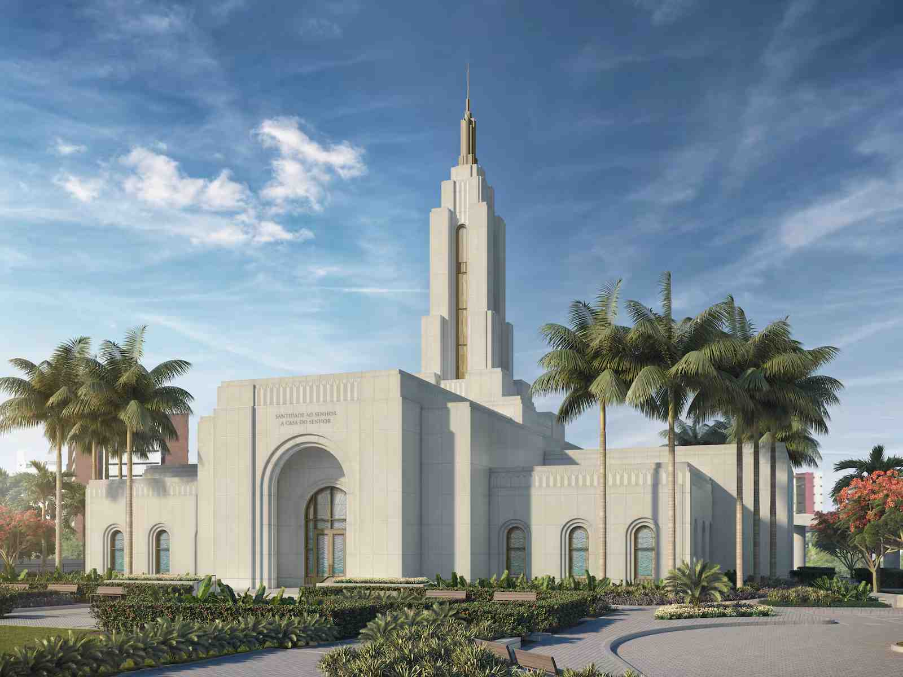
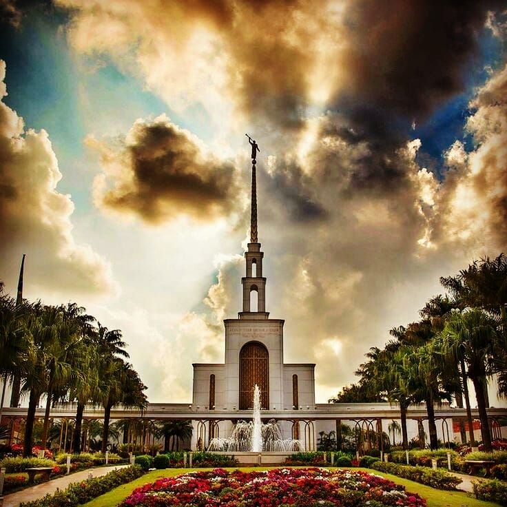
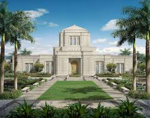
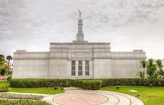
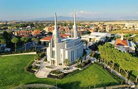
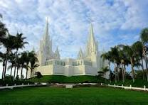

Temple Album
☰
Home
Old
New
Large
Small
Temples

Joâo Pessoa Temple

Sâo Paulo Temple

Belo Horizonte Temple
Curitiba Temple

Porto Alegre Temple
Rio de Janeiro Temple

Roma Temple

San Diego Temple
Salt Lake Temple